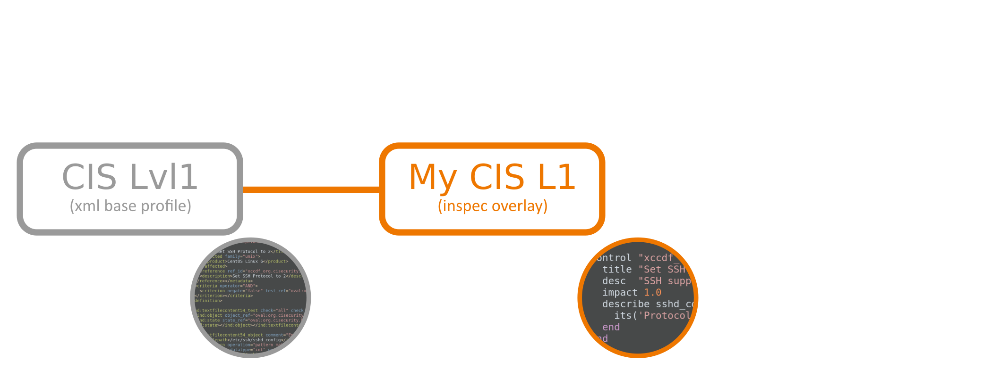
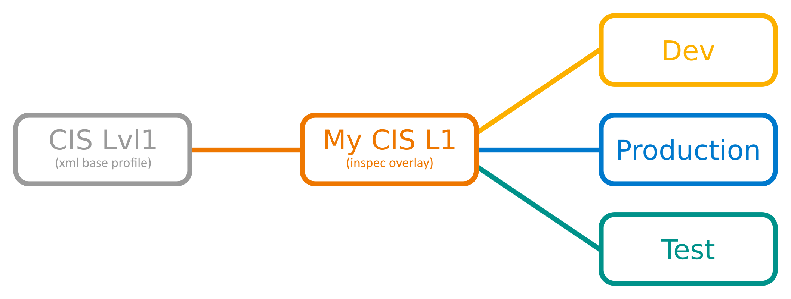
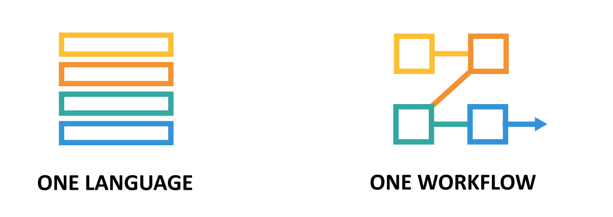
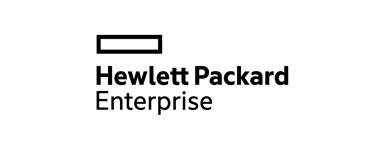
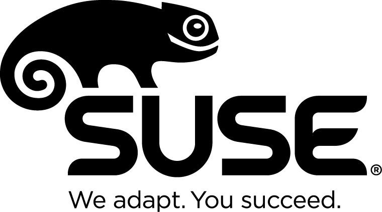

InSpec 1.0: The Quest to Make Testing and Security part of DevOp
$> whoami
InSpec turns infrastructure testing, compliance and security requirements into code
- 86 Releases (5 per month)
- 59 Contributors
- 2.900 Commits
- Inventors: Dominik Richter, Christoph Hartmann
InSpec Contributors:
 |
 |
Why should I care?
My infrastructure works already
And I deployed a booster already!
Are you sure?
- code - deploy cycle should be short
- safety needs to be ensured
- ensure (corporate) guidelines are fullfilled
InSpec turns infrastructure testing, compliance and security requirements into code
InSpec HowTo
$ inspec
Commands:
inspec archive PATH # archive a profile to tar.gz (default) or zip
inspec check PATH # verify all tests at the specified PATH
inspec compliance SUBCOMMAND ... # Chef Compliance commands
inspec detect # detect the target OS
inspec exec PATHS # run all test files at the specified PATH.
inspec help [COMMAND] # Describe available commands or one specific c...
inspec init TEMPLATE ... # Scaffolds a new project
inspec json PATH # read all tests in PATH and generate a JSON su...
inspec shell # open an interactive debugging shell
inspec supermarket SUBCOMMAND ... # Supermarket commands
inspec version # prints the version of this tool
Options:
[--diagnose], [--no-diagnose] # Show diagnostics (versions, configurations)
Test your local node
describe sshd_config do
its('Protocol') { should cmp 2 }
end
inspec exec test.rb
| chef-client | inspec | |
|---|---|---|
| Project | github.com/chef/chef | github.com/chef/inspec |
| First Commit | March 2008 | April 2015 |
| Language | Ruby DSL | Ruby DSL |
| Code |
|
|
| Execution | Local | Local / Remote (SSH, WinRM, Docker) |
| Artifacts | Recipes, Resources, Cookbooks | Controls, Resources, Profiles |
| Share | Chef Supermarket, Github, Bitbucket, etc | Chef Supermarket, Github, Bitbucket, etc |
Compliance language
control 'ssh-1234' do
impact 1.0
title 'Server: Set protocol version to SSHv2'
desc "
Set the SSH protocol version to 2. Don't use legacy
insecure SSHv1 connections anymore...
"
describe sshd_config do
its('Protocol') { should cmp 2 }
end
end
Test remote via SSH
inspec exec test.rb -i vagrant.key -t ssh://root@172.17.0.1:11022
no Ruby / agent on the node
Test remote via WinRM
inspec exec test.rb -t winrm://Admin@192.168.1.2 --password super
no Ruby / agent on the node
Windows 2016 / Nano Support
Test Docker Container
inspec exec test.rb -t docker://3cc8837bb6a8
no SSH / agent on the container
Profile foundation
Make adjustments
Native InSpec
include_control "cis/cis-centos6-lvl1" do
skip_control "xccdf_org.cisecurity.benchmarks_rule_1.5.1_Set_UserGroup_Owner_on_etcgrub.conf"
skip_control "xccdf_org.cisecurity.benchmarks_rule_1.5.2_Set_Permissions_on_etcgrub.conf"
control "xccdf_org.cisecurity.benchmarks_rule_3.9_Remove_DNS_Server" do
impact 1.0
end
end
control "my-own-1" ...
Spread to other environments
Custom Resources
control 'tls1.2' do
title 'Run TLS 1.2 whenever SSL is active on a port'
impact 0.5
port.protocols(/tcp/).entries.each do |socket|
describe ssl(port: socket.port).protocols('tls1.2') do
it { should be_enabled }
end
end
end
control 'ssl2' do
title 'Disable SSL2 from all exposed SSL ports.'
impact 1.0
port.protocols(/tcp/).entries.each do |socket|
describe ssl(port: socket).protocols('ssl2') do
it { should_not be_enabled }
end
end
end
Custom Resources
class SSL < Inspec.resource(1)
name 'ssl'
desc "
SSL test resource
"
def initialize(opts = {})
@host = opts[:host]
@port = opts[:port]
...
end
def enabled?
res = SSLShake.hello(@host, protocol: 'tcp', port: @port)
res['success']
end
end
InSpec Profiles
$ inspec init profile my-newprofile
Create new profile at /Users/chris/my-newprofile
* Create directory controls
* Create file controls/example.rb
* Create file inspec.yml
* Create directory libraries
* Create file README.md
* Create file libraries/.gitkeep
$ inspec exec my-newprofile
Profile: InSpec Profile (my-newprofile)
Version: 0.1.0
Target: local://
✔ File /tmp should be directory
✔ tmp-1.0: Create /tmp directory
Summary: 2 successful, 0 failures, 0 skipped
 Annie Hedgpeth: InSpec Tutorial: Day 5 - Creating a Profile
Annie Hedgpeth: InSpec Tutorial: Day 5 - Creating a Profile
Works with all DevOps tools e.g.
Facts
- ✔Translate compliance into code.
- ✔Clearly express statements of policy.
- ✔Inspect machines, data, and APIs.
- ✔Run code anywhere.
- ✔Find issues early.
- ✔Write code quickly.
Demo Time
Scale
Roll-out saftey at scale
Compliance as Code.
| Development | Staging | Production |
|---|---|---|
| Chef | Chef | Chef |
| Test Kitchen | CI/CD | Chef Server |
| Serverspec | ChefSpec Rubocop |
Security Tool |
Chef Compliance ships with profiles for:
|
Amazon Linux 2014.09 / 2015.03 |
6 / 7 |

HP UX 11i |
5.3 / 6.1 / 7.1 |
|
RHEL 6 / 7 |

SLES 11 / 12 |
12.04 / 14.04 |
2012 R2 |
One workflow cycle

∞